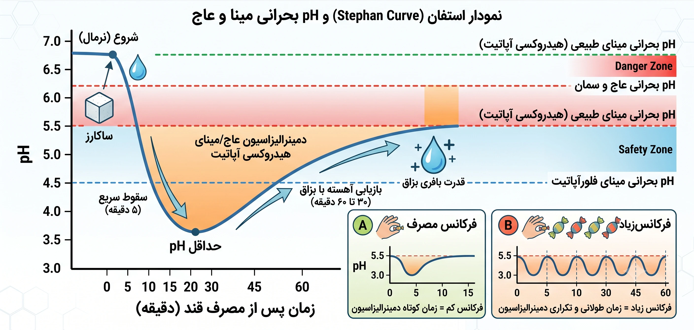

نسخه استخراجشده؛ ترجمه یا تأیید علمی انجام نشده است. وضعیت: captured
پوسیدگی دندان حاصل برهمخوردن تعادل میان از دست رفتن املاح (Demineralization) و رسوب مجدد املاح (Remineralization) است. کلید این نبرد در دست pH بیوفیلم است. 
فقط ۵ دقیقه: پس از مصرف قند (ساکارز)، pH بیوفیلم ظرف مدت بسیار کوتاهی سقوط کرده و به حداقل میرسد.
۳۰ تا ۶۰ دقیقه: بازگشت pH به حالت نرمال توسط قدرت بافری بزاق زمان بسیار بیشتری میبرد.
pH بحرانی مینای طبیعی (هیدروکسی آپاتیت):$5.5$. در پایینتر از این مرز، مینا شروع به حل شدن میکند. (به مرز قرمز در نمودار دقت کنید).
pH بحرانی یک عدد ثابت برای تمام بافتها نیست و با حضور فلوراید تغییر میکند.
🔑 مرزهای جدید برای یادگیری:
مینای فلورآپاتیت (حضور فلوراید): فلوراید کریستالهای حلشده را به صورت مقاومتر بازسازی میکند و pH بحرانی مینا را به $4.5$ کاهش میدهد. (۱ واحد حاشیه امن بیشتر).
عاج و سمان (ریشه دندان): این بافتها املاح کمتری دارند و به شدت به اسید حساسترند. pH بحرانی آنها $6.2$ تا $6.7$ است؛ یعنی حتی با یک اسید ضعیف هم تخریب ریشه شروع میشود.